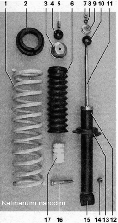

Задняя подвескаМоменты затяжки резьбовых соединений
- ОПИСАНИЕ КОНСТРУКЦИИ Задняя подвеска автомобиля полунезависимая, выполнена на «упругой» балке с продольными рычагами, цилиндрическими пружинами и телескопическими амортизаторами двустороннего действия. Балка задней подвески состоит из двух продольных рычагов, соединенных поперечиной U-образного сечения. Такое сечение обеспечивает соединителю (поперечине) большую жесткость на изгиб и меньшую — на кручение. Соединитель позволяет рычагам перемешаться относительно друг друга в небольших пределах. Рычаги выполнены из трубы переменного сечения, — это задает им необходимую жесткость. К заднему концу каждого рычага приварены кронштейны для крепления амортизатора, шита заднего тормозного механизма и оси ступицы колеса. Спереди рычаги балки закреплены болтами в съемных кронштейнах лонжеронов кузова. Подвижность рычагов обеспечивается резинометаллическими шарнирами (сайлент-блоками), запрессованными в передние концы рычагов. Нижняя проушина амортизатора крепится к кронштейну рычага балки. К кузову амортизатор прикреплен штоком с гайкой. Эластичность верхнего и нижнего соединений амортизатора обеспечивают подушка штока и резинометаллическая втулка, запрессованные в проушину. Шток амортизатора закрыт гофрированным кожухом, защищающим его от грязи и влаги. При «пробоях» подвески ход штока амортизатора ограничивается буфером хода сжатия, выполненным из эластичной пластмассы. Пружина подвески своим нижним витком опирается на опорную чашку (стальная штампованная пластина, приваренную к корпусу амортизатора), а верхним — упирается в кузов через резиновую прокладку. На фланце кронштейна рычага балки установлена ось ступицы заднего колеса (она крепится четырьмя болтами). Ступицу с запрессованным в нее двухрядным роликовым подшипником удерживает на оси специальная гайка. На гайке выполнен кольцевой буртик, который надежно стопорит гайку путем его замятия в проточку оси. Подшипник ступицы закрытого типа и не требует регулировки и смазки в процессе эксплуатации автомобиля.- Пружина амортизатора задней подвески: 1 — пружина; 2 — резиновая прокладка; 3 — крышка кожуха; 4, 10 — подушка штока амортизатора; 5 — распорная втулка; 6 — кожух амортизатора; 7 — гайка ; 8 — пружинная шайба; 9 — опорная шайба; 11 — шток амортизатора; 12 — корпус амортизатора; 13 — нижняя опорная плашка пружины; 14 — гайка болта нижнего крепления амортизатора; 15 — проушина; 16 — болт нижнего крепления амортизатора; 17 — буфер хода сжатия |